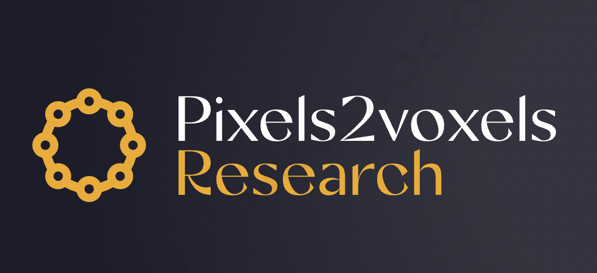

Pixels2Voxels Research (P2VR) is a non-commercial and voluntary research group, established in February 2023, not affiliated with any official institution, dedicated to promoting extensive academic research cooperation.
The team currently has 7 senior researchers and 10 researchers. Our research mainly includes multimodal and 3D virtual digital human. More specifically, the multimodal direction includes multimodal representation learning, audio-visual localization, commonsense reasoning, and the digital human direction includes controllable image/video generation, 3D avatar reconstruction and generation, conditional human motion generation, human-aware 3D scene generation.
Our main target is to publish influential academic papers in the top conferences such as CVPR/ICCV/ECCV/SIGGRAPH. To join us, you have to be self-motivated and have published at least one related paper on the top tier conferences.
News
2023.02 - We teammates got 5 papers accepted to CVPR 2023.
2023.02 - Pixels2Voxels Research is founded for spontaneous research cooperation.
Contact Us
- To contact Pixels2Voxels Research for academic/commercial
collaboration, please send e-mail to haofanwang.ai@gmail.com with
"Interested in Pixels2Voxels Research" in your e-mail title, and breifly introduce your research background.